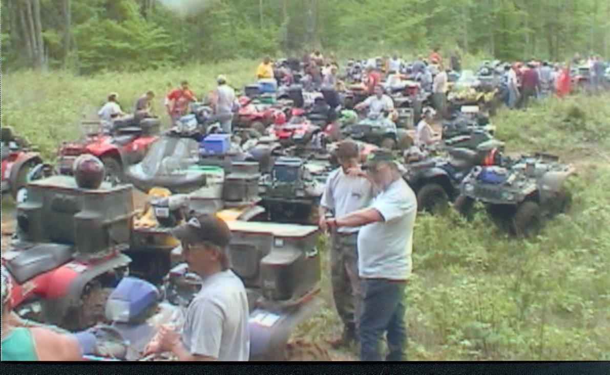
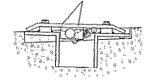
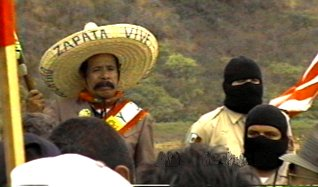

1) [Pittstown, Rensselaer County, NY] "Phil Kelly ... finds himself constantly chasing off and being threatened by illegal hunters and all-terrain vehicle riders on his posted property. ... The landowner said ATV riders began cutting through and even stealing gates off of one section of his property ... They destroyed around $6,000 worth of gates .... "I've had neighbors and people at the Country Store threaten to burn me out and put a bullet in me ["and that other (Landowner), Ferran"]" Kelly said. "Little did I know serious they were." [They burned down his storage barn and attempted to enter his home at midnight.] "It's like something out of 'Deliverance'. ... the State Police [in Rensselaer County, New York] make me feel like the criminal instead of the victim." http://www.troyrecord.com/site/news.cfm?newsid=2721020&BRD=1170&PAG=461&dept_id=7022&rfi=8 In New York, "law enforcement and the judicial system have not always been responsive to ATV abuse."
2) A Farmer stopped a group of riders and told them to leave. He was beaten up. "It took a metal plate to fix the broken leg. He also had head injuries from being punched and kicked. The assault is an escalation in a property rights conflict [between land-owners and defiant trespassers]." http://www.tribune-chronicle.com/news/story/03602002_new11.asp In "Lake County, Ohio, Farm Bureau president Russell Rettger had an ATV trespass problem. He ordered the trespassers out of his hayfield. Over the next three weeks his cow barn was broken into twice. Three calves and one cow were beaten to death. The perpetrators beat other cows with bats and boards to break their legs." http://www.wiwfarm.com/trespass.html
3) "ARSON. A male on Rutland Way, Stephentown [Rensselaer County, NY], said his vehicle, which was parked along a trail to deter ATV use, was damaged by fire. Officer: Trooper Steve Kovaleski." Albany (NY) Times Union, Police Blotter (Wed. July 28, 1999 p. F2)
This essay collects many similar articles and a discussion of the New York statutes that authorize citizens to forcibly stop and to perform citizen's arrests of ATV-offenders in NY. Save, and print copies of the linked articles in case they cease to be maintained online. Feel free to forward or post.
In 1988, Time Magazine described how "roaring ATVs are shattering the peace" and introduced America to a lawless subculture whose members presume that by buying (or stealing) an "all terrain" vehicle, they are entitled to intrude upon "all terrain":
"Villages on Missouri's Black River ... used to be oases of tranquillity, the destination of weekend canoeists, tube floaters and fishermen. No longer. All too often the solitude of the Ozarks wilderness is shattered these days by the whine and rumble of powerful engines. ... Locals call it "the Invasion." The ... four-wheel vehicles, running up and down the riverbed with abandon. ... For the ATV crowd, it was all just good fun. But for conservationists and others interested in keeping the river pristine, the Invasion is a nightmare ... and the law has failed to halt the nightmare. "These things destroy the ecology of the river," says Larry Koeler, a Centerville lawyer, of the ATVs. ... Horror stories abound. Former River Guide Eric Dunn recalls ... "a young boy tried to run down me and my wife and son." ... County Sheriff Gary Barton ... and his two deputies can hardly make a dent in the rampant ATV challenge. On Memorial Day weekend they wrote scores of tickets to ATV riders who trespassed on private property or were intoxicated. ... The sheriff, who owns three ATVs himself, takes no chances. "I don't equip my patrol car with a regular rifle," he says. "I have an M-16. I leave it in the patrol car where you can see it. You have to make a show of force." Although the state conservation commission sent five agents into Reynolds County to help Barton out, it was not enough of a show to make much difference. "The ATVs still go anywhere they want." ... Sierra Club Director Hattoy charges that the ATVs permanently scar the land, kill wildlife and destroy vegetation, as well as cause noise, safety and pollution problems. Says he: "... no one has the right to chase jackrabbits until their hearts explode, or roar over desert turtles." ATV Enthusiast Buddy Bray sees it differently. "I don't believe riding ATVs destroys the desert," he says. "All you kill is the bushes."
Time, 6/13/88 (Invaders on The Black River).
"Kids are out there five evenings a week running over everything including the cactus. They just don't seem to care." http://www.azcentral.com/arizonarepublic/scottsdale/articles/0722sr-offroad22Z8.html ATVs stir dust, controversy, The Arizona Republic (July 22, 2003) (or try this link)
On the sand dunes of the Albany (NY) Pine Bush, trespassing ATVs kill the wild "bushes" called wild Blue Lupine, and so they ultimately kill the endangered Karner Blue Butterfly that depend on the bushes. In 1998, the Albany (NY) Times Union described the "serious" ATV problem in the Albany Pine Bush ecosystem:
"The Karner blue butterfly is slowly losing its fight to survive in the Albany Pine Bush Preserve, one of the species' last remaining natural habitats in the United States. The killer: humans. The latest tool of destruction: the all-terrain vehicle. The azure-winged butterflies, about the size of a quarter, are being threatened by burly ATVs illegally churning through the property, Pine Bush officials said Tuesday. As they pop wheelies and spin doughnut-shaped grooves into the earth, ATV riders are also mowing down the wild blue lupine, the only plant that Karner caterpillars eat, said Preserve Steward Joel Hecht. ``If you impact the plant, you're going to directly impact the Karner blue butterfly,'' he said. This region was once home to hundreds of thousands of the flying blue lepidoptera... Now, there are only a few hundred in the Pine Bush. ... The species is listed by the federal government as ENDANGERED. ATVs aren't permitted in the 2,400-acre Pine Bush, said ... Ranger Joseph Hess, the lone DEC officer patrolling the preserve. But ... riders ignore posted signs. Anyone caught riding a vehicle over Pine Bush land could face a $100 fine and up to 15 days in jail, Hess said. ... 'Without intervention, they will be lost.''"
Albany (NY) Times Union, September 2, 1998, by Paul Zielbauer. (Title/subtitle: "ATVS A MENACE IN KARNER BLUE'S BACK YARD Vehicles threaten butterfly's food source in Pine Bush, officials say")
See also "GOODBYE KARNER BLUE"
http://headlines.igc.apc.org:8080/enheadlines/992560769/index_html
("New England's only wild population" of the endangered Karner blue butterfly "appears to have died out")
The "lone ranger" in the Albany Pine Bush has not evolved the super-human ability to enforce the law in all parts of his territory at the same time. But the ATV industry has been busy flooding the land with ATVs. ATV manufacturers knowingly place ATVs into the hands of people ready, willing, and able to intrude upon any and "all" unguarded public or private "terrain".
"Industry-wide ATV retail sales increased during the first quarter [of 2001] in spite of the concerns of a slowing economic environment." "American Honda's ATV sales also soared in 2000, ending the year at 211,152, an increase of 29.6%. Once again Honda exceeded the ATV industry's healthy growth rate of 18.8%..." Arctic Cat Dealers advertised in 2002: "New this year!! A smaller ATV just for kids!!" (And already: "Boy, 12, killed in ATV crash" ( June 7, 2002) ; "9-year-old Boy killed in ATV accident" (July 7. 2003); (6-year-old Boy killed driving ATV into ditch) ( June 6, 2003); 1 year-old seriously hurt on ATV driven by 9 year-old. (Oct 3, 2003) See also, "ATVs Too Dangerous for Kids" http://www.denverpost.com/Stories/0,1413,36~417~1584179,00.html
"In Morgan County [West Virginia] last year [2002], a man was viciously assaulted on his property by four ATV-riding trespassers he had told to stay off his land. Instead of leaving as they were obligated to do by law, these trespassing thugs drove an ATV onto the man’s leg, pinned him down and beat him nearly to death. Then they rode away, leaving him to die. Fortunately, he survived to identify the attackers." (February 23, 2003) http://sundaygazettemail.com/news/Woods+&+Waters/2003022234
It is Written: "THOU SHALT NOT COVET THY NEIGHBOR'S HOUSE ... NOR ANYTHING THAT IS YOUR NEIGHBOR'S" Exodus 20:17 (Deuteronomy 5:21, Romans 7:7, 13:9)
"COVETING = is when DESIRE becomes INORDINATE or UNLAWFUL. THIS LEVEL OF DESIRE PLANTS THE SEEDS OF WILLINGNESS TO: HURT, STEAL, KILL. Coveting is desire run rampant w/o control. It will injure, hurt, even destroy to get what it wants [but is not lawfully entitled to]!" http://www.apostolic.edu/biblestudy/files/10th-com.htm
"Although many riders use ATVs on their own property, many others don't, and that's the problem. They think the neighbor's private property is their own personal turf to cruise over, ignoring fences and "No Trespassing" signs. Farmers, woodsmen, home owners have become helplessly enraged over the ATV damages they have undergone. Last year, a property owner in western Morgan County was badly beaten when he tried to stop a group of young "macho?" ATV riders who were driving across his property." http://www.cacaponriver.org/news/newsletter2003-1.htm ( The Craze - and Curse - of ATVs)
There are "growing legions of fans of ATVs and dirt bikes, known collectively as off-road vehicles. An estimated 45,000 ORVs are sold in New Jersey each year. But as the number of ORVs has grown, so has the number of conflicts with land owners, who complain about the noise and damage to dirt roads caused by ATVs and dirt bikes that trespass on their land. ... ATV and dirt-bike riding is illegal on private property without the owner's permission. ... Little Egg Harbor resident Bill Hartley lives in woods along a private dirt road that he says ORV enthusiasts use constantly. The vehicles chew up the road, creating deep ruts and making it difficult for him to drive on his own road. "Look, everyone has to do a hobby. It's fun, it's great," he said. "It's when they don't respect another person's property, that's when I have a problem." ... "I guess there was this general belief (among ORV riders) that if there is vacant land, they could just use it," Tavarez said. "As more and more houses were built, they found the land did belong to somebody. But that didn't stop them from riding on the land. ... "There's still that small percentage of riders that create most of the problem, and there is nothing you can do to stop that except enforce the law." http://www.southjerseynews.com/issues/april/m040702a.htm
"We're looking at pretty consistently, year-in and year-out, 10 percent increases in the number of machines." http://www.seacoastonline.com/2002news/3_26maine.htm At this rate of population growth (10% per annum), the ATV-population will double every 8 years or so. "'More and more people are acquiring them, and they don't know the laws or [don't] want to know the laws about where they can use them,' Karp said. "They drive [ATVs] anywhere they want and create their own trails." http://www.sltrib.com/2003/Nov/11082003/utah/109281.asp
"[Maine] has suddenly become a magnet for ATVers from all over New England. The popularity of ATVs, though, has not come to Maine without a cost. Landowners across the state, outraged over the destruction caused by the machines, have posted thousands of acres of land, closed long-established snowmobile and hiking trails, and even set traps to catch trespassing ATVs. Safety experts gasp at the rapid increase in injuries and deaths among ATV users. Farmers fear ATVs could become the next vehicle for spreading plant diseases from one field to the next. And legislators are responding with a raft of bills aimed at tightening rules, increasing fees, and toughening enforcement. ... Widespread ATV resentment could even trigger a resurgence of efforts to require a [statutory] presumption that all private land is closed [for ALL recreational uses] unless posted as open to the public.... "It's a very explosive issue," says Roberta Scruggs, a veteran outdoors writer who recently authored a landmark report on the deteriorating relations between landowners and ATV owners.... People are angry to a point that I've never seen before," Scruggs adds. 'The Number One landowner problem is ATVs.' " The ATV Menace http://www.easterntrail.org/lib/atvart5.html
"Sporting model-names like Cannibal, Warrior and Scrambler, [and Predator ("The Baddest" ATV. ), Raptor etc. ], all-terrain vehicles (ATVs) and trail bikes embrace a rough and rebellious image. Ads for the popular off-road vehicles depict gritty, go-anywhere machines aggressively piloted by riders who look fearsome in their helmets and face masks. As sales of the vehicles grow, an alarming number of riders appear to be taking the rebellious image too far.... Too many riders flout the law." http://www.adirondackexplorer.com/oct2001atv.html
|
POLARIS "PREDATOR"
500
"savage ... power"
|
|
"In the Predator’s world,
“survival of the fittest” is the rule. And like all dominant
beasts, Predator continues to evolve. That's a good thing. Because out
here, you're either Predator or you're prey."
|
As the ATV-riding population increases, while new land is not being created on this continent, Landowners who own highly coveted terrain will be increasingly targeted by ATV-trespassers ranging from peaceful sneak-thieves to violent fully-masked land-robbers, and even vindictive arsonists riding in on four wheels. The only solution is to diligently ENFORCE the LAW in order to maintain RESPECT for PRIVATE PROPERTY, and vice versa. "For nothing is more destructive of respect for the government and the law of the land than passing laws which cannot be enforced." Albert Einstein.
The commandment forbidding coveting thy neighbor's land, and the commandment that "Thou Shalt Not Steal" are at "the foundation of the moral code and legal system of justice for Western Christian civilization." http://biblescripture.net/Commandments.html To openly REBEL against these commandments by disrespecting your neighbors rights to his private property is to Declare War Against YOUR NEIGHBOR And War Against GOD (See Part 2 at www.billstclair.com/ferran )
The Moral Code and Legal System (in New York State) "makes it lawful for a man to kill a thief, who [uses] force ... to take away his money, or what he pleases, from him; because using force, where he has no right, to get me into his power, let his pretence be what it will, I have no reason to suppose, that he, who would take away my [property], would not, when he had me in his power, take away every thing else. And therefore it is lawful for me to treat him as one who has put himself into a state of war with me, i.e. kill him if I can; for to that hazard does he justly expose himself, whoever introduces a state of war, and is aggressor in it." John Locke, Second Treatise on Government, Ch. III, sec. 18 ( http://www.thisnation.com/library/books/locke/2ndtreatise-c03.html ); Accord, Rights of New York Landowners to Use Force www.billstclair.com/ferran
"ATV riders have 'started a war.' "I mean, cutting the trail through my property, that was enough," he said. "But then I come back and I'm telling these people, 'Look, I don't want you riding through here,' but they're going to do just what they darn well please." ... 'I caught a few people out there and I lit into them,' he said. 'One guy told me I was some sort of nut. Well, I don't care what you think, you're on my property and you have no right to be here. '" http://www.seacoastonline.com/2002news/3_26maine.htm
People submit to the state to remain free and to have their property protected. “Political power, then, I take to be a right of making laws […] for the regulating and preserving of property, and of employing the force of the community in the execution of such laws and in the defense of the commonwealth from foreign injury; and all this only for the public good” (John Locke 4)
"Law is the collective organization of the individual right to lawful defense. ... Each of us has a natural right--from God--to defend his person, his liberty, and his property. These are the three basic requirements of life, and the preservation of any one of them is completely dependent upon the preservation of the other two. For what are our faculties but the extension of our individuality? And what is property but an extension of our faculties? If every person has the right to defend -- even by force -- his person, his liberty, and his property, then it follows that a group of men have the right to organize and support a common force to protect these rights constantly. Thus the principle of collective right -- its reason for existing, its lawfulness -- is based on individual right. And the common force (i.e., Government and Law) that protects this collective right cannot logically have any other purpose or any other mission than that for which it acts as a substitute. " The Law, by Frederic Bastiat (French economist, statesman and Anti-Socialist, 1850) http://jim.com/bastiat.htm
John Locke believed that man created Government and Law to help him secure his property. "Man wanted, first, an established and promulgated Law. He wanted a judge to make determinations according to this Law. And he wanted an executive to carry out these determinations. He hoped to gain these three advantages by entering into the social contract. But he did not give up all his rights in making this agreement: 'Though men when they enter into society give up [the absolute] executive power they had in the state of nature into the hands of society, to be so far disposed of by the legislative as the good of society shall require, yet it being only with an intention in everyone the better to preserve for himself, his liberty and property; (for no rational creature can be supposed to change his condition with an intention to be worse) the power of the society or legislative can never be supposed to extend farther than the common good; but is obliged to secure everyone's property.... ' " http://www.gdn.edu/PT_Faculty/j_richards/lectures/Hist1122Locke.PDF
John Adams warned: "The moment the idea is admitted into society that property is not as sacred as the laws of God, and that there is not a force of law and public justice to protect it, anarchy and tyranny commence. If 'Thou shalt not covet' and 'Thou shalt not steal' were not commandments of Heaven, they must be made inviolable precepts in every society before it can be civilized or made free." (A Defense of the American Constitutions, 1787) http://www.federalobserver.com/archive.php?aid=3481
In the backward places, (like Rensselaer County, New York where the former DA who resigned was reputedly an ATV-rider http://www.propertyrightsresearch.org/dear_fellow_property.htm ), the very government officials who are sworn to respect, uphold, and enforce the Laws securing private property (e.g., land) may instead combine with and ABET the trespassers, creating situations "like something out of 'Deliverance'" where land-owners "can't get any justice" and are instead treated like "criminals instead of victims" for simply lawfully defending their property where the police have failed to protect it. http://www.troyrecord.com/site/news.cfm?newsid=2721020&BRD=1170&PAG=461&dept_id=7022&rfi=8
The appropriate legal remedies for landowners in such extreme situations, where anarchy or tyranny have commenced, may include: 1) the Forcible Defense of Property (See: The Rights of NY Landowners to Use Force, at www.billstclair.com/ferran ) including the use of "defensive erections" such as "Severe Tire Damage" tire-spikes and/or 2) the invocation of the Federal Ku Klux Klan Act (42 USC sections 1983, 1985 and 1986) against the deviant public officials (See Part 1 and Postscript at www.billstclair.com/ferran ) and/or 3) quasi-political campaigns to force the resignation, re-education, or un-election of the deviant public officials (see http://groups.yahoo.com/group/politics/message/9052 and http://www.motorcycle-info.com/atv/four_wheeler_atv/four_wheeler_atv_msg17885/four_wheeler_atv_msg17885.shtml )

http://www.swoam.com/SWOAMForum/0000003f.htm
"The problem is ATV abuse of landowner's rights.... [T]he growing misuse of ATVs ... is the outdoor recreation issue of the decade."
http://www.theunionleader.com/articles_show.html?article=5937
The NY Rules (above) and brochures distributed by the NY DOT state:
"To operate an ATV on private land, you must have permission of the land owner or lessee. If you receive permission, make sure you know the boundaries of the property, and respect any special restrictions or requests of the land owner."
http://www.nydmv.state.ny.us/broch/c29.htm
The laws of New York state, though sufficient on their face, have failed to curtail ATV trespass, and ATV-riding trespassers are increasing in numbers, and increasing in defiance and belligerence against land-owners. Stopping ATV trespassers on private land is generally not a priority of the police. The People of the state of NY simply could not afford to pay for the amount of Police time that would be necessary to control the ATV trespass problem. Not even to protect the endangered Karner Blue Butterfly has the police presence in the Pine Bush been increased. Albany's Common Council President, Helen Desfosses, explained: "In addition to Albany's important efforts to get more police onto the streets, .... citizen involvement is crucial to crime prevention." (http://www.albanycouncilpres.com/Articles/albany-future.shtml )
It is obvious to many that if the ATV problem is to be effectively controlled, citizen-enforcement of the Law must be undertaken by those nearest to the problem (on public or private property) who recognize their civic duty, and who are informed of the privileges and risks of citizen's arrest. The risks of personal confrontations with defiant trespassing offenders are grave. The risks to pedestrian landowners attempting to stop masked ATV-offenders is even greater. Many Police Officers and landowners have been run-over by ATVs while trying to stop or apprehend ATV offenders. Even the youngest ATV riders are fully aware that ATVs can be used as Weapons:
"Teen Arrested For Running Over Deputy: A 16-year-old accused of running over a Davidson County deputy with an all-terrain vehicle was arrested. Investigators said that Deputy Chris Stillwell was attempting to stop the teenager when he was struck by the vehicle. The teen was reportedly the driver of the ATV. There is no word on the condition of the deputy. The teen is in the Davidson County Jail under a $75,000 bond."
Yahoo News, October 11, 2001 (No longer posted on web) ThePiedmontChannel.com
"Man on ATV shot after running over officer" (in Florida)
http://www.polkonline.com/stories/070600/sta_man-shot.shtml (AP 7/06/2000)
[In 2002, Suzuki ATV Mfg. Co. unveiled an ATV advertising "campaign centered around the theme "Get Out of the Way!" The first spot debuted on ESPN Oct. 11. [The] goal with this new campaign is to identify a core emotional theme that would ring true for the serious ... ATV rider. " "This new campaign injects an edgy sense of excitement tied together with a true authenticity and powerful imagery that appeals to this audience." http://www.colbyandpartners.com/html/news/articles/2002/10-01.htm "What if we are [walking] on a trail and an ATV comes whizzing around a bend? Elderly people and kids can't move fast enough to get out of the way, and if the driver loses control it may not matter which way you jump out of the way." http://www.flyfishersparadise.com/soapbox/oldsoap/atv.htm ]
http://www.thesunlink.com/news/2000/april/0405code.html
(A 19-year-old man led security on an ATV chase ...on private property.)
http://www.poconorecord.com/1999/local/exd42284.htm
(Blown engine ends ATV chase)
http://www.pacentral.com/lsentinel/news_01302.htm
Audubon Magazine reported:
"The 500 combat missions flown by Colonel George Buchner over Vietnam didn't prepare him .... Buchner found trespassing ATV operators popping wheelies in his private trout stream. When he demanded their names, one rider dismounted and attacked him, breaking his nose. When he fenced his posted stream and property, ORV operators cut the wire and pulled the stakes. When he reinforced the stakes with cement, they knocked them down. He received death threats, his streetlights were shot out, his mailbox smashed, his driveway seeded with broken glass, the eight-strand fence on his Christmas tree farm cut in 88 places, and his wife run over. "Robin was screaming," he said, "and the guy calmly cranked up his machine and finished running over her. He had come through multiple barriers, multiple posted signs, three fences, and a gate. She had a hematoma extending the length of her leg." In July 1996 Buchner confronted two trespassing ATV operators, one of whom knocked him down. "Basically, [ATV]s ran me out of Michigan," Buchner told me from his Arizona home."
http://magazine.audubon.org/incite/incite0003.html
"We know that '[p]ublic disguise is a particularly effective means of committing crimes of violence and intimidation. From the beginning of time the mask or hood has been the criminal's dress. It conceals evidence, hinders apprehension and calms the criminal's inward cowardly fear.' M. Abram & A. Miller, "How to Stop Violence! Intimidation! In Your Community" (August 15, 1949). A nameless, faceless figure strikes terror in the human heart. But, remove the mask, and the nightmarish form is reduced to its true dimensions. The face betrays not only identity, but also human frailty.
State v. Miller, 398 S.E.2d 547, 550 (Ga. 1990). http://www.state.wv.us/wvsca/docs%5Cspring96%5C23050.htm
An ATV also provides a criminal with a very efficient means for disappearing into the woods and for "flight" from apprehension. That capacity of an ATV of itself gives courage to those who use them for criminal purposes:
Among the dangers faced by landowners who resist invasions of their land in backwards places like Rensselaer County, New York, are the credible threats made by many ATV-trespassers, or by lawless parents, to return and trespass with guns during the deer-hunting season (either on foot or on ATV) and to purposefully shoot the land-owner (who may be hunting deer) under the pretense of mistaking him for a deer. See, e.g., hunting-season death threats at http://www.troyrecord.com/site/news.cfm?newsid=2721020&BRD=1170&PAG=461&dept_id=7022&rfi=8 It is already known that in backwards places like Rensselaer County, New York, many young ATV-riding trespassers do not even have sense enough to stay out of even POSTED private woods during deer-hunting season, nor even sense enough to refrain from punching armed landowners who may confront them and ask them to leave. http://www.motorcycle-info.com/atv/four_wheeler_atv/four_wheeler_atv_msg17885/four_wheeler_atv_msg17885.shtml
"6. A person may, pursuant to the ensuing provisions of this article, use physical force upon another person in defense of himself or a third person, or in defense of premises, or in order to prevent larceny of or criminal mischief to property, or in order to effect an arrest or prevent an escape from custody. Whenever a person is authorized by any such provision to use deadly physical force in any given circumstance, nothing contained in any other such provision may be deemed to negate or qualify such authorization." NY Penal Law s 35.10(6)
http://assembly.state.ny.us/leg/?cl=82&a=12
"Our educational system is failing. Our schools are producing students who are - to quote from the conclusion of a 858 page report recently published by a distinguished blue ribbon Presidential Task Force on Educational Quality- "stupid." The drop in our national IQ has caused many problems, including ... in the field of crime. [W]e are producing incompetent criminals...." Dave Barry, (as appropriately published in the Troy Record) July 15, 2001.
On January 3, 2003, Albany Times Union political columnist Fred LaBrun stated that in Rensselaer County, New York, "these instruments from hell" are running amok and "cops make an all-too-infrequent stop of some yahoo churning up the landscape on somebody else's private property. ... There have been a number of testy confrontations recently in the rural parts of the county between ATV riders operating illegally and property owners. Something very bad is going to happen if this persists. Private property is, after all, private property. Owners get edgy about that." http://www.timesunion.com/AspStories/story.asp?storyID=88794&category=REGION&newsdate=1/3/2003
"It's the yahoos among them that make life difficult for all of us. Those people should lose their right to continue terrorizing us. ... Riders need to show they've got the maturity to deserve something other than the yahoo label. Or they need to turn in the keys to their toys." http://www.easterntrail.org/lib/atvart2.html
It would be ideal to have an Olde-Fashioned Forfeit-to-Landowner (or, Forfeit-to-Capturer) statute on the books in each state. This would deter ATV-trespass and encourage law-enforcement (e.g., the arrest and prosecution of criminals). The State “may and often should stimulate prosecutions for crime by offering to those who shall initiate and carry on such prosecutions rewards for thus acting in the interests of the State and the people” Turney v. Ohio, 273 U.S. 510, 538 (1927). Accord: Marshall v. Jericho, Inc., 446 U.S. 238 (1980).
BARRIERS TO PREVENT OR TERMINATE ATV-TRESPASS
Fortunately, NY Common Law provides alternatives to personal confrontations. The Highest Court of New York has declared that landowners have a common law privilege (a "property right") to "destroy" the "instrument of trespass" (e.g., vehicle) used by "defiant trespassers." People v. Kane, 142 N.Y. 366, 37 N.E. 104 and 131 N.Y. 111 ("The ownership and possession of property confer a certain right to defend that possession, [including] a defense of it which results in an assault and battery, and that which results in the destruction of the means used to invade and interfere with that possession.") In Reed v. Esplanade Gardens. Inc., 91 Misc.2d 991, 993 (1977), the court noted the general principle of the Common Law that when dealing with the chattel (e.g., vehicle tires) of a trespasser on the true owner's land the law is that "[I]n such circumstances THE LANDOWNER IS PRIVILEGED TO deal with the personal [property of another] in a manner which would otherwise be a trespass [to chattels, including DETENTION or DAMAGE] or a conversion [e.g., the complete destruction, distress, or disposal] IF THE ACT IS reasonably NECESSARY TO PROTECT THE ACTOR'S INTEREST [e.g., necessary to "prevent or terminate" a trespass upon his premises]. However, "the actor may be liable if he uses unreasonable [i.e., un-necessary] force which causes harm to the chattel [unnecessarily]." Reed. Accordingly, a NY land-owner is privileged to damage an ATV as "necessary" to terminate a trespass, or to effect an arrest.
Further, once an ATV is discovered, and is captured trespassing on private property in defiance of conspicuous "No Trespassing" signs, the New York land-owner may be privileged to impound and detain the vehicle until his damages are paid, pursuant to the common-law remedy of "trespass damage feasant" (also known as "distress damage feasant"). http://www.cs.tcd.ie/Proinnsias.OCillin/lawcourse/tort/trespass.htm http://69.1911encyclopedia.org/T/TR/TRESPASS.htm ; Sindle v. NYCTA, 33 N.Y.2d 293, 307 N.E.2d 245 (1973). The New York landowner may also condition the release of the ATV upon payment of an additional fixed "Reasonable Redemption Fee" (e.g., $100, plus per diem) to compensate the landowner for the trouble or expense of impounding, safeguarding, storing and/or releasing, the vehicle, if Notice of the fixed Redemption Fee has been Conspicuously Posted along the roadway (e.g. driveway or other ATV "trail"). Fieldston Prop. Owners Assn. v. City of New York, 16 NY2d 267, 269; Forest Hills Corp v. Kowler, 80 AD2d 630; Forrest Hills Corp. v. Baroth, 147 Misc. 2d 404.
Accordingly, NY Penal Law Sec. 35.05 provides: "Unless otherwise limited by the ensuing provisions of this article defining justifiable use of physical force, conduct which would otherwise constitute an offense is justifiable and not criminal when:1. Such conduct is ... authorized by law...."
NY statutes specifically authorize the use of non-deadly "force ... in defense of premises" (i.e., land). It is lawful for landowners in NY (and other common law states) to defend their land from trespass-by-vehicles by deploying roadspikes, nails-in-boards, caltrops, etc. as is customarily done at private parking lots in New York and many other states.

"The Traffic Controller ... can be used as a free entrance or exit in your parking facility ... and includes 20 steel cut blade teeth." http://www.texassecuritygates.com/traffic.htm
Road spikes, caltrops, spiked fences, etc. deployed
at a perimeter are generally considered to be "non-lethal" force:
http://www.dnr.state.oh.us/policy/UseOfForceWeaponsDir.htm
http://www.zarc.com/english/non-lethal_weapons/nlt-usaf.html
www.geocities.com/SoHo/Gallery/3452/nonleth.htm
(After "Yet another death", farmers/landowners
deploy nails-in-boards to fight ATV trespass) http://hv.greenspun.com/bboard/q-and-a-fetch-msg.tcl?msg_id=004B4h
As noted, peaceful landowners in the US
are stopping trespassing ATVs in the basically the same way that Police, parking
lot owners, and drive-in movie theaters stop other types of vehicles, by
lawfully placing NAILS (road spikes) in their paths. In this manner, the
risks inherent in personal confrontations (between landowners
and violent ATV-trespassers) can be reduced.
Farmers
seemingly have perfected the technique:
"I would start by posting the
property 'Danger!!-- Private Property -- Keep Out!!' (big red letters are
nice...) for a week or two, and then I would proceed to sink some nice holes in
the ground on either side of the roads & drive. Fill 'em with concrete and
set a hasp into it. Get a nice big board, like a 2x12 cut to span between the
two hasps. Drive some nice ten-pennies into them thickly, and then put screw
eyes at either end. Chain the boards to the hasps with padlocks. After they've
lost a few tires, they may rethink their route. You can easily unlock one end
and drag it at a right angle out of the way when you want to get thru for field
work, then lock it back up at night. -- Julie Froelich, December 06,
2000."
http://hv.greenspun.com/bboard/q-and-a-fetch-msg.tcl?msg_id=004B4h
Commercially manufactured Road Spikes, like
Antech Co's Guardian or
DeltaScientific's SabreTooth ( http://www.deltascientific.com/gallery13A1_3.htm
) and Doorking's Model 1610 traffic spikes (which can do much more tire
damage than simple round nails) are currently employed at gates of the Wichita
Mountains National Wildlife Refuge campgounds and at the Great Swamp Watershed
in NJ (http://www.greatswamp.org/SeeDo/hiking.htm), and at numerous parking lots, airports, and
drive-in theaters and numerous other private properties ( http://www.contractorstools.com/pdf_files/doorking_1615.pdf
http://www.aaaremotes.com/parkingacc.html)
around the country.
See: DeltaScientific's SabreTooth http://www.deltascientific.com/gallery13A1_2.htm
("The Sabre Tooth will puncture all pneumatic tires including steel belted
radial and large truck tires.")
Traffic Spikes "Provide extremely effective ... unmanned traffic control by puncturing the tires of offending vehicles." (http://216.239.57.104/search?q=cache:ule1mgNrVYIJ:www.antech.com/Guardian/TC/Traffic.html+extremely+effective+one-direction+unmanned+traffic+control+by+puncturing+the+tires+of+errant+vehicles&hl=en&ie=UTF-8)
PMG's "roadspike" product is marketed for "perimeter control" for
security purposes:
http://www.law-enforcement.com/buyersguide/SubcategoryPage.cfm?MajCatCodeParam=18&MinCatCodeParam=050
Comercially manufactured caltrops (called
"PORTABLE ROADBLOCKS") are recommended for "use with extreme caution and
discretion" to "protect private property." http://www.spymall.com/catalog/gadgets-index.htm

Good & Cheap "NAILS IN THE PATH WORK GREAT."
"The 4-wheelers are
trespassing and causing damage and death to pets. Here in NC the police are slow
to respond (often 2 hours later) they say its a low priority issue. I asked
about the boards with nails. On your "privately" owned and "posted" land you can
lay boards down and if they have nails in them well it is on your land.
(officially). Unofficially if the trespassers get hurt most will sue. And
with our "liberal" courts the landowner is about 75% sure to loose. Wish the
odds were better."
Spiked fences are common in NY cities: "Mechanical devices and animals may be used for the protection of property.... Barbed wire, fence spikes, and broken glass are reasonable since they serve to exclude.... Spring guns and traps on the other hand are dangerous weapons.... Vicious dogs, with protensities to kill or seriously injure, are generally treated like mechanical devices except that a posted warning in such cases has [in New York state] served as a defense." Rights Incident to Possession of Land, sec. 28.18 Forcible Resistance Against Intruders (KF575 M367).
Pursant to New York's Recreational Use Statute, an owner of premises, even if not "posted", "owes NO DUTY to keep the premises SAFE for entry or use by others" pursuing listed activies. The statute also states that an owner has "NO DUTY to give warning of any hazardous condition or use of or structure or activity on such premises." GOL s 9-103
"Under a Recreational Use Statute, recreational users are treated in the same manner as trespassers and thus the landowner owes them no duty of care." http://www.americanwhitewater.org/archive/article/124/
"Landowners are not bound to issue warnings, inspect their property
or repair dangerous conditions for trespassers. However, landowners
do not have the right to intentionally injure trespassers, except to
protect themselves or their property."
http://cnrit.tamu.edu/cgrm/whatzhot/liabel.htm
A California court construing language in a landowner immunity statute similar to language in NY GOL s 9-103, concluded that a justified use of physical force against a trespasser was a lawful intentional "use of" land and therefore not a "willful" act depriving the landowner of statutory immunity. Similarly, the NY High Court declared that the placement of a cable stretched across a road to stop trespassing vehicles is a lawful condition or use of land, even if the landowner's effort to give notice of the hazard later proved insufficient to prevent a decapitation injury. But a wilful or malicious failure to give notice of the hazardous condition or use of property could give rise to liability. Sega v State, 60 NY2d 183.
"A Youngsville [NC] father believes his son's death was the result of another man's attempt to keep four-wheel drivers off his property. Joshua Woodruff, 22, 203 William Pearce Way, died Sunday at WakeMed in Raleigh from internal injuries he suffered after driving a four-wheeler into a steel cable. ... Woodruff's father, James Woodruff, said that when his son and a few other of his friends driving four-wheelers entered the path, there was no cable on the road. "When they were on their way back home, the cable was up and 'Josh' didn't see it." Lt. Nelson Ross of the sheriff's department said Woodruff must have been going pretty fast, but he could not give an exact speed he was traveling. The cable was about two-and-one-half feet off the ground. ... Woodruff was not supposed to be driving a four-wheeler on the property, according to Ross. ... Arnold had put up no-trespassing signs at two entrances on the property. Arnold told deputies that he put a steel cable along the road to stop trucks from coming in and dumping trash on his land. Ross said Arnold has a long history of problems with people dumping trash and riding all terrain vehicles on his land without his permission. He put up signs, fences, and a eventually the cable to prevent their activity, but was still unsuccessful. Ross said Arnold has reported several trespassing incidents to the sheriff's department in the past three years. "They even tore one of his fences down," Ross said. Roy Frazier, owner of Frazier's Store at the N.C. 96 and 98 intersection, said many of his farming friends have complained about people riding four-wheelers across their property and dumping trash. "That's what is happening all around here," he said. Frazier said there are cables up everywhere, leaving few places for children to ride their three- and four-wheelers. North Carolina law prohibits driving vehicles on private property without permission from the property owner. Ross said Arnold did not do anything illegal by placing the steel cable in the road to protect his property. Ross also said no one will probably be charged in the case. "It appears to be just an unfortunate accident," he said. ... James Woodruff said he hopes the incident will protect someone else's child in the future. "But my son is gone." http://www.wakeweekly.com/archives/2002/Mar21-1.html (March 21, 2002)
In some states an unpainted (e.g., gray) cable could be regarded as a "trap" imposing civil and criminal liability upon a landowner unless augmented by bright ribbons etc. "A trap is a hazard that is known to the landowner or person in charge, but concealed to others. If a trespasser is injured by a trap, the landowner is open to liability for the injury, even though the trespasser violated he law by trespassing. The following have been held unlawful traps for which the landowner can be held responsible: (1) setting a spring gun, (2) creating obstacles on a public roadway, (3) installing a cable gate across a private road known to be used by he public. To reduce he liability risks for #3, the road should be posted as private access. If a cable or chain is used to close a road, it should be flagged with brightly colored flags or other materials." http://www.cwmuutahwildlife.org/trespass.htm and http://www.wakeweekly.com/archives/2002/Mar21-1.html
The NY High Court has also held that: "where landowners fence or post "No Trespassing" signs on their private property or, by some other means, indicate unmistakably that entry is not permitted, the expectation that their privacy rights will be respected and that they will be free from unwanted intrusions is reasonable." http://www.law.cornell.edu/ny/ctap/079_0474.htm
Responsible landowners will post conspicuous "NO TRESPASSING" or
"POSTED" signs, and/or signs specifically warning trespassers of hazards, risks
of property damage, and/or that physical force (i.e., the infliction
of some physical injury and pain) may be used to exclude, expel or to arrest
them. In Palumbo v. State, 487 So.2d (Fla.App. 1986), the plaintiff was
injured when he entered a lake containing alligators. He alleged that he did not
see the alligators and did not read the posted warning signs. In the
opinion of the court, it was irrelevant whether plaintiff had actually read the
signs. As long as he was given a reasonable opportunity under the circumstances
to read the warning message, he would be charged with the knowledge that "would
be obvious to him upon the ordinary use of his senses."
The National
Forest Service has been constructing "tank traps" to exclude trespassing
motorized vehicles (e.g., ATVs) from the lands at Targhee. "[E]arth berms...,
backed by pits." "The traps were [installed] to restrict [vehicular]
access to public lands in the national forests." "The dangers posed by the
traps were made clear [when a man] testified ... he was at the front of a small
group of snowmobiles when his vehicle was violently thrust up into the air. He
came to rest in a pit with a broken back." http://www.heartland.org/environment/may99/traps.htm
The berms were installed after "gates"
proved ineffective to prevent ATV "trespass."
http://66.109.128.22/wildrock/wd4116/wd162/Gate-Crashing-Report.pdf
http://www.fs.fed.us/r4/curlew/Targhee/travel_plan/code15.html
"Private property owners are finding off-road vehicle damage to be an escalating problem financially, ecologically and emotionally. On March 24, 2002 the Portland Press Herald documented the story of Harlan Brown whose experience parallels the problems other landowners are having with off-road vehicle trespass. Brown has been posting signs, and has gone as far as installing heat and motion sensors on his property to aid him in preventing further damage to his property from off-road vehicle abuse. Corporate landowners like International Paper and Portland Natural Gas Transmission System are trying to mitigate ATV and other off-road vehicle damage and trespass on their corporate properties as well. Some of steps these corporations have taken to mitigate damage including hiring security officials, installing large boulders and putting up barricades." http://www.naturaltrails.org/VroomReport/4-2-02.html (Off-Road Vehicle Trespass - a National Issue)
"Harlan Brown has installed heat- and motion-sensor cameras in the woods to catch ATV riders on his property so he can press criminal trespass charges. He'd already put up "No ATV" signs and blocked paths that ATV riders had cut through his woods. He even stretched a steel cable with ribbons between two sturdy oaks, but somebody cut down one of the trees." http://www.seacoastonline.com/2002news/3_26maine.htm
Motion-Activated Film Cameras can now be purchased for under $100 dollars. In New York, deploying "motion-activated cameras" to identify and prosecute unknown ATV-trespassers is generally a waste of time and money unless you can get pictures of the unmasked FACES of the ATV-offenders. This is because ATV-offenders in New York generally do not display readable registration "plates" required by Law to be displayed and will swap helmets, clothing, and even ATVs with relatives or members of their ATV-gang from time to time for the specific purpose of avoiding being easily identified and prosecuted based upon the external appearance of their equipment. New York State Police generally treat even close-up pictures of masked ATV-offenders and their ATVs as being "useless" for prosecution purposes. But, ATV-offenders will sometimes remove their helmets and face-masks when they have to stop to destroy and remove substantial barricades or barriers placed to impede their trespass, such as many small trees, boulders, or brush placed across the trail. Be careful to disable or cover the "flash" on such cameras, or the ATV-offenders will easily find them and steal or damage them.
Landowners who rely upon cables or chains to prevent vehicular trespass can "armor" their anchor trees by pounding dozens of steel common nails diagonally (downward \ and upward /) into each tree (later cutting the nail-heads off to prevent their extraction and to minimize bark damage as the tree grows) to deter chain-saw damage. This will not kill the trees, but will prevent them from being cut-down. Alternatively, the tree-owner can nail (with barn nails or heavy lag bolts) several heavy steel 6-foot tall 2inch-wide pipe-hanger type straps vertically over the bark of the trees down to their roots. This is a more visible deterrent to chain-saw attacks upon the trees, but as the tree grows, the vertical straps may cause some scarring of the bark many years down the road (but this is still better than having strangers cut down the whole tree).
"Wayne Harper, of the Portland Natural Gas Transmission System, says his company is spending $100,000 a year and more to repair ATV damage along its pipeline right-of-way in southern Maine. He has put up fences and signs. "They usually last less than two days," he says with a touch of bitterness. "Wooden gates are chainsawed. Metal gates are torched. We've hired private security firms. We brought in heavy equipment to build boulder barricades. Without exception ATVers have gone over, around, or through them." " http://www.easterntrail.org/lib/atvart5.html
"The company repaired the damage, put up signs and hired a retired policeman to provide security. It imported dump truck loads of large boulders and built substantial barricades to protect Branch Brook. In December 2000, the company added riprap and completely rebuilt the streambanks. Six months later, Harper said, "it looked like we never did anything." http://www.seacoastonline.com/2002news/3_26maine.htm (Landowners take aim at irresponsible ATV riders )
See also: "12 Innovative ways to demonstrate to ... Land Grabbers your disapproval of your land being used ... in violation of the 5th Amendment." at
The ATV Trespass problem is serious and pervasive
throughout the US:
In March of 2003, Maine's Governor acknowledged "That ATV trespass
and property damage are out of control and costing fishermen, hunters,
snowmobile, and other outdoorsmen loss of access to private
land"
http://www.easterntrail.org/lib/ATVconf.pdf
In a New Hampshire Town, "The police chief believes part of the problem with ATVs is that kids who own them have nowhere to drive them. He said it makes no sense for parents to buy an ATV for their children when they have nowhere to ride. 'If you own a 100-by-100 piece of land and have no ATV-trailer, it doesn't make much sense to have them," Nason said. He added ATV trespassing is a problem all over the state. ... 'It's not the equipment, it's the people," Andrews said. "They have a lack of concern.' ... Even if private property is not posted with a "no trespassing" sign, Nason said ATV riders and snowmobilers should know not to go on private property where they are not welcome. 'If people don't want them on their land they have that right,' Nason said. 'It's just something you don't do.' Johnson said ATV organizations should step up and control reckless drivers. 'They go in and do what they want,' Johnson said, 'These things can't go on.' " http://www.easterntrail.org/news/atvart.html
Rowdy ATV drivers forced closing of Florida Airport:
"Opa-locka West
Airport in remote northwest Miami-Dade County has been closed indefinitely to
air traffic because it has been overrun by all-terrain vehicles, aviation
officials said Wednesday. The ATV drivers have been using the
airfield's two runways as racetracks and, before the airport closed about a week
ago, refused to get out of the way of landing and departing planes, pilots and
officials said. ... "They leave rocks and everything on the
runways. 'We look at it as trespassing, and it's not going to be
tolerated,' she said. 'It's not a recreational area; it's an airport.' "
http://archives.californiaaviation.org/ganews/msg09472.html
(March 1, 2001)
(Lawsuit alleges neighbors cut an ATV trail)
http://www.nashuatelegraph.com/Main.asp?SectionID=25&SubSectionID=354&ArticleID=55309
Off-roader's Observation:
"I wish [ATV riders] would realize that
they are the reason so many of the trails and private lands are being closed.
[A] large majority of the ATV crowd has no respect for the land that they ride."
http://www.psychowheeling.com/custom4.html
A responsible ATV-rider advises other ATV-riders that: "You're protecting yourself by turning in the bad guy. If you don't, then people think we're all bad guys. [T]he few bad apples need to be educated, made to join clubs where they'll be taught how to ride responsibly." http://www.easterntrail.org/lib/atvart3.html
"Riders like Roger Roy, of ATV Maine, are welcome on the trails they ride because the club has obtained permission. He said responsible ATV riders ride only on marked trails and keep an eye out for riders abusing the land. Other solutions that came out at the meeting were to raise fines for violators, require riders to use bigger license plates and provide more money for enforcement. But the sentiment voiced over and over again was that ATV riders need to unite with other recreational riders, create clubs and prove to landowners that they can respect the [boundaries of land-owner designated] trails." http://www.easterntrail.org/lib/atvart4.html
"Today, the largest constituency organized to open up parks and wilderness areas to roads and development is no longer Wise Use loggers and resource industry employees but suburban owners of motorized dirt bikes, ATVs, snowmobiles, and personal watercraft. While millions of Americans are having a love affair with fast, loud off-road vehicles, their owners are creating major user conflicts with tens of millions of other outdoor recreationists who enter wilderness areas believing they've left the noise and pollution of the freeway behind." http://www.progressive.org/june03/helv0603.html
"And a [Arizona] State Land Department official is promising to close the property if ATV (all-terrain vehicle) and dirt bike owners don't act more responsibly. ... "The noise and dust are really bad," said Steve Bidwell, a resident of Carefree Shadows. "Kids are out there five evenings a week running over everything including the cactus. They just don't seem to care." "In some places it's just heartbreaking." Off-roaders have gone off state trust land onto Scottsdale property and destroyed native tree seedlings that had been nurtured for two years for transplant into the preserve." "It's not only illegal, but they're destroying the very thing they're supposed to be out there enjoying," Carla said. "We have asked the State Land Department to start closing these areas to motorized vehicles." Off-road operators need a recreational permit to be on state trust land and are required to stay on established paths. Geeck said only about one in 10 have the permit, and many mistakenly think cutting new trails is part of the off-road experience." ... The problem, Geeck said, is there are many more violators than law enforcement personnel available to catch them. " http://www.azcentral.com/arizonarepublic/scottsdale/articles/0722sr-offroad22Z8.html ATVs stir dust, controversy, The Arizona Republic (July 22, 2003) (or try this link)
"If they were generally responsible, ATV riders would have wider access to trails .... There would be fewer barriers and "no-trespassing" signs. But that's a big "if" at this point." http://www.easterntrail.org/lib/atvart2.html
ATV rider bragged to friends about setting farmer's barn on fire.
http://www.washingtonpost.com/wp-dyn/articles/A29962-2002Feb5.html
Strawberry crop is
burned by retaliating ATV trespassers:
"'Over 99.9 percent of the snowmobile
people are great. They generally police themselves. ATV users -that's a
different story.' ... 'I've called several wardens in the past to report
ATV-abuse problems and the response time was at least five hours.'"
outdoors.mainetoday.com/hunting/011128underwoo.shtml
(Snowmobilers say ATVs are tearing up and closing trails)
http://outdoors.mainetoday.com/snowmobiling/011206atv.shtml
"A 120-member snowmobile club that is losing trail access [said]: "We'd like to see them form their own organization so they can get their own trail system and stay off our trails," Don Roux, trailmaster for Sno-Goers, said of ATV users. "And," he said, "we'd like to see more enforcement." http://www.easterntrail.org/lib/atvart4.html
"The Harrisons didn't want ATVs on their land, but agreed to allow snowmobiles. 'ATVs have a tendency to dig and I think they do more damage.'" http://outdoors.mainetoday.com/snowmobiling/030209sledclubs.shtml
"Also the idiots with the ATVs who think 'hey the trails are closed to snowmobiles, but I can get through with my ATV though.' These people too are causing landowner conflicts. You could have 10,000 snowmobiles go across a farmer's field in the winter and you can't even tell in the summer, but all it takes is one ATV or a 4wd truck to damage the property in muddy conditions and the farmer gets pissed, refuses to allow use of his land for the trail and the club is scrambling for alternates." http://www.snowmobilefanatics.com/snofan/topic.asp?TOPIC_ID=4232&whichpage=2
http://webusers.warwick.net/~u1001223/Articale1/Article1.htm
http://www.pocahontastimes.com/news0426.html#7thstory
(Nature pays the price as ATVs hit Minnesota's woods)
http://www.startribune.com/stories/531/1633242.html
"These machines are literally ripping
apart some areas of [New York's] Adirondack Forest Preserve,"
said Adirondack Council Executive Director Brian L. Houseal. "It is hard to
believe the extent of the damage to the state land in the Adirondacks. Last May,
the Department of Environmental Conservation publicly acknowledged that illegal
ATV operation was a problem in the Adirondacks. In fact, it was forced to close
some roads to all motor vehicle traffic in the Aldrich Pond Wild Forest, due to
severe damage caused by ATVs in the area." Aldrich Pond Wild Forest is in
southern St. Lawrence County. Similar damage was documented in photographs
of the Wakely Mountain Wild Forest (central Adirondacks) and the Independence
River Wild Forest (western Adirondacks) as well as the pine barrens of eastern
Long Island. ... ATVs represent perhaps the greatest threat to our
woodlands of anything facing our parks and preserves," said Long Island
Pine Barrens Society Executive Director Dick Amper." http://www.adirondackcouncil.org/atvban03pr.html
(ATV Trespass damage in VT municipal
forest)
http://www.cybertopia.net/reporter/headlines/2851atv.html
(Hunting Lands closed and spoiled because
"a deer can figure out that an ATV means danger" and landowners reject
ATV-use by hunters.) Peterson's Hunting Mag, (www.huntingmag.com ) Mar./Apr.
2002. p18.
(trails ruined by disrespectful ATV riders)
http://www.easterntrail.org/news/atvart.html
Citizen's Arrest in NY is authorized and regulated by NY Criminal Procedure Law Article 140 and the use of force and even deadly force for the purpose of effecting such an arrest and maintaining the safety of the citizen performing it, is authorized by Penal Law section 35.30(4) and 35.10(6). See statutes at: http://assembly.state.ny.us/leg/?cl=82&a=12
New York Criminal Procedure Law (CPL) sec. 140.30 (1) provides:
"Subject to the provisions of subdivision two, any person may arrest another person ... for any offense when the latter has in fact committed such offense in his presence."
http://assembly.state.ny.us/leg/?cl=25&a=22
In NY, private citizens have the "same authority" to make arrests of factually "Guilty" offenders as do police officers. Police have a legal duty to make arrests. Private Citizens have a civic and moral duty to make arrests. It is however extremely important to completely understand every limitation and all the regulations and duties applicable to arrests by private citizens as prescribed in Criminal Procedure Law Article 140. http://assembly.state.ny.us/leg/?cl=25&a=22
It is very important that one undertaking a Citizen's Arrest also have a thorough knowledge of the Laws which define arrestable offenses, since private citizens may only arrest factually "guilty" offenders, and may not arrest merely upon reasonable belief nor probable cause.
http://assembly.state.ny.us/leg/?cl=25&a=22
See NY RULES FOR OPERATION OF ALL TERRAIN VEHICLES
http://caselaw.lp.findlaw.com/nycodes/law128/art82.html
A violation of these Rules is an "offense" for purposes of authorizing a private citizen to arrest an ATV operator without a warrant. See, VTL sec 155 & PL 10.00(2)
"For purposes of arrest without a warrant, pursuant to article one hundred forty of the criminal procedure law, a traffic infraction shall be deemed an offense." VTL sec 155
http://assembly.state.ny.us/leg/?cl=128&a=3
" 'Offense' means conduct for which a sentence to a term of imprisonment or to a fine is provided by any law of this state or by any law, local law or ordinance of a political subdivision of this state....." PL 10.00 The term "offense" therefore means any felony, misdemeanor, violation, or traffic infraction, unless otherwise specified in the law defining the offense. Penal Law sec 10.00 (1-6). http://assembly.state.ny.us/leg/?cl=82&a=5
ATV riders who will ride on any "new trail" they hear about without even knowing the owner will usually resist arrest, and try to flee (or run over the landowner): http://www.atvtime.com/steelriders/Features/Others/DoWhat.html
What happens in NY when the ATV operator who is engaged in an arrestable offense (e.g., NY VTL s 2403(3)) or is fleeing from the scene resists a lawful citizen's arrest?
Penal Law, sec. 35.30, titled "Justification; use of physical force in making an arrest or in preventing an escape", provides:
"4. A private person acting on his own account may use physical force, other than deadly physical force, upon another person when and to the extent that he reasonably believes such to be necessary to effect an arrest or to prevent the escape from custody of a person whom he reasonably believes to have committed an offense [in his presence] and who in fact has committed such offense; and [after giving due notice of the grounds for the arrest] he may use deadly physical force for such purpose when he reasonably believes such to be necessary to:(a) Defend himself or a third person from what he reasonably believes to be the use or imminent use of deadly physical force."
"The right of a law enforcement officer [or a private citizen] to make an arrest necessarily carries with it the right to use some degree of physical coercion or threat thereof to effect it." Frazell v. Flanigan, 102 F.3d 877 (1996), quoting Graham v. Connor, 490 U.S. 386, 396 (1989).
When arresting offenders riding ATVs, it is important to be aware that the ATV can be used as a dangerous instrument against the person making the arrest.
In NY, forcible "conduct" such as "Menacing" (PL 120.14), "which would otherwise constitute an offense is justifiable and not criminal" when committed "in defense of himself or a third person, or in defense of premises, or in order to prevent larceny of or criminal mischief to property, or inorder to effect an arrest or prevent an escape from custody." Penal Law 35.10(6).
Penal Law s 120.14, titled "Menacing" prescribes:
"A person is guilty of menacing in the second degree when [without justification]:1. He or she intentionally places or attempts to place another person in reasonable fear of physical injury, serious physical injury or death by displaying a deadly weapon, dangerous instrument or what appears to be a pistol, revolver, rifle, shotgun, machine gun or other firearm." http://assembly.state.ny.us/leg/?cl=82&a=27
However, many states, including NY, while not authorizing the USE of Deadly Force to stop trespassers, nevertheless do provide that an occupant may use necessary non-deadly force (including "threatening" to use deadly force, i.e., "menacing"). For example, Arizona's statutes explicitly authorize landowners to "threaten to use deadly physical force" in defense of land. Arizona Revised Statutes 13-407. http://www.azleg.state.az.us/ars/13/00407.htm
Similarly, New York statutes provide that a person "may USE any degree of physical force, other than deadly physical force, which he reasonably believes to be necessary for" the listed purposes e.g., defense of premises, persons, to arrest.
NY Penal Law sec 10, Definition (11) provides: ""Deadly physical force" means physical force which, under the circumstances in which it is used, is readily capable of causing death or other serious physical injury."
http://assembly.state.ny.us/leg/?cl=82&a=5
Menacing with an unloaded gun, or with a dangerous instrument, and even firing a warning shot AWAY FROM the trespasser, and safely "threatening to use" deadly force, etc. are not a "USE" of Deadly Physical Force. Therefore each such act would be lawful in NY when such a use of non-deadly force is necessary and lawful under article 35 of the NY Penal Law. See:
http://www.courts.state.me.us/01me91gl.pdf
People v. Davis, 72 N.Y. 2d 32, 530 N.Y.S.2d (1988).
PEOPLE v. CHRYSLER, 85 N.Y.2d 413, 649 N.E.2d 1162, 626 N.Y.S.2d 18 (1995) (( http://www.law.cornell.edu/ny/ctap/085_0413.htm )
NY Case in point:
"A Canajoharie, New York, car thief's efforts were put in park after a potential victim pressed a shotgun to the criminal's throat. Daniel J. Stetin foiled the crime after awaking for work and discovering his car already running outside. He grabbed a shotgun and went to investigate, while his wife grabbed the telephone and dialed 911. Confronted by an armed and angry Stetin, the crook rested quietly on the ground and waited for police to arrive. (The Sunday Gazette, Schenectady, NY, 5/21/95)"
http://www.objectivists.org.au/May09-1999/armed-citizen.95.htm
There was no apparent "USE" of "deadly physical force" here (unless the shotgun had a hair-trigger and/or the safety was OFF), only a lawful and apparently necessary and sufficient "threat" to use such deadly force. Note: If the man who owned the car stood in front of it, and if the thief had attempted to escape by driving over the car's owner, the car's owner would have had the right to prevent that escape involving vehicular assault, by using deadly physical force (i.e., shooting). This is because the law, in support of citizens who place themselves in positions of peril to arrest guilty offenders, provides that the private citizen "may use deadly physical force for such purpose [to effect an arrest or prevent an escape] when he reasonably believes such to be necessary to:(a) Defend himself or a third person from what he reasonably believes to be the use or imminent use of deadly physical force." There is no duty to retreat while performing a lawful citizen's arrest. PL 35.10(6); 35.30(4).
http://www.canoe.ca/CNEWSLaw0107/24_atv-par.html
(ATV posse traps man, rescues girl)
For other interesting articles about purported citizen's arrests see:
http://www.counterpunch.org/pipermail/counterpunch-list/2000-May/000341.html
Land-owners Defend Private Property in the Second Mexican-American War:
See also, The "Rights of NY Landowners to Use Force (Display Guns) to Stop, Expel and Arrest Defiant Trespassers" at: www.billstclair.com/ferran
To: Arizona Sheriff Larry Dever:
Illegals Trespass in AZ, like ATVs Trespass in NY
[Note the Reply of Arizona Sheriff Larry Dever (below)]
Putting the brakes on ATVs
Troy-- Proposed Rensselaer County law would fine owners of all-terrain vehicles for improper use
By MICHELE MORGAN BOLTON (mbolton@timesunion.com), Staff writer First published: Thursday, December 26, 2002
"A fresh blanket of snow on miles-long stretches of open fields and power lines is all it takes to warm the hearts and rev the motors of the state's 250,000 all-terrain vehicle owners. And while many of those operators are licensed and otherwise comply with the law -- and the good graces of private property owners -- a growing number don't, said lawmaker Ed Swartz. The Schodack Republican is proposing legislation to implement a county fine for improper use of an ATV and for operating an unregistered vehicle. Increasing registration fees could help fund enforcement efforts, he said. Swartz said he has been researching the potential legislation for about four months after receiving a number of complaints from residents in his rural district who claim ATV operators are riding rampant through privately-owned fields and yards. Many of those concerns have come from fellow Schodackians, he acknowledged. "More and more residents are upset because of disruptions or damage to their property," Swartz said. "It's clear something needs to be done to protect property owners." Some reports have indicated that more than 50 riders at a time, in some instances, have come from out of town to take advantage of the wide, open spaces, he said. Few, if any, have permission to traverse the routes that they do. The frustration is shared by residents and police as the number of ATVs has increased in recent years, he said. Carefully regulating usage may be the only way to protect everyone's rights, he said. New York state has more than 75 organized ATV clubs, but many users prefer to ride on their own. Owners are required to register their equipment with the Division of Motor Vehicles, paying a $15 annual fee, Rensselaer County Clerk Frank Merola said. And while most vehicles are registered, the inherent problem occurs when they are ridden on private property, Merola added: "You're not going to catch them unless you're chasing them on an ATV yourself." Incoming legislator Keith Hammond said ATV riders from North Greenbush and East Greenbush regularly maneuver their machines through a huge gravel pit near his 100-acre Poestenkill farm and then indiscriminately cross property lines. "I have some thought about this," he said, of Swartz' proposition, which he said he also backed a number of years ago. "These people ride your property like they own it." Poestenkill has already implemented an ATV registration process that requires riders to not only buy licenses, but carry written permission at all times while on private property. "If they don't have it they can't be there," said Hammond. Swartz said he has asked the Legislature's lawyers to review his ideas. He also said he knows it first may require action from the state before the county can implement any independent policies. "ATVs are great for recreational purposes when properly and safely used," he said. "And the vast majority of riders are respectful and courteous. However, there is a small minority of riders that have little respect for other people's property."
On January 1, 2002, the Albany Times Union noted again that Renssealer County Landowners "want action on ATV drivers using private property without obtaining permission. Elected officials are grasping for solutions after landowners with guns ran off trespassing all terrain vehicles twice in the last 18 months." TU 01/01/2002
New York and Arizona Landowners have essentially the same legal rights under state laws to use force (e.g., guns) in defense of their premises. See, e.g., "Rights of NY Landowners to Use Force (Display Guns) to Stop, Expel and Arrest Defiant Trespassers (or Terrorists) at http://billstclair.com/ferran .
And, on January 3, 2003, Albany TU columnist Fred LeBrun stated that in Rensselaer County, "these instruments from hell" are running amok and "cops make an all-too-infrequent stop of some yahoo churning up the landscape on somebody else's private property. ... There have been a number of testy confrontations recently in the rural parts of the county between ATV riders operating illegally and property owners. Something very bad is going to happen if this persists. Private property is, after all, private property. Owners get edgy about that."
http://www.timesunion.com/AspStories/story.asp?storyID=88794&category=REGION&newsdate=1/3/2003
The Albany TU already reported, in November of 2002, that: "A teenager [seated on a parked ATV] was shot in the ankle by a [landowner] deer hunter as they scuffled during an argument that was sparked by the boy allegedly trespassing on private land, police said." [The ATV-rider had refused to leave the land, threatened and punched the 69-year old landowner who was holding a deer rifle, causing the older man to fall down and causing the rifle to accidentally discharge, striking the trespasser in the ankle. The local police falsely arrested and charged the landowner for "recklessly endangering" the trespasser, as if the landowner was supposed to expect to be punched and knocked down while holding a rifle, and to protect the trespasser from that risk.]
The local District Attorney, who reputedly rides ATVs, has announced plans to practically abolish private property rights in the County in order to make private land completely "safe" for ATV-trespassers. See http://www.propertyrightsresearch.org/dear_fellow_property.htm
Meanwhile, the same things are happening in Arizona:
Monday, December 23, 2002
Copyright © Las Vegas Review-Journal
EDITORIAL: Run for the border
Private citizens perform service in rounding up illegal border crossers
At least three such property rights groups are now patrolling the Arizona-Mexico border, endeavoring to round up smugglers and other illegal alien invaders, whereupon they turn them over to local and federal police. The property owners targeted in this protest are not known to have committed any illegal violence.
This is apparently too much for Pamela K. Sutherland, legal director of the Arizona CLU, to bear.
"We are a government of law," Ms. Sutherland asserts. "The vigilantism and lawlessness they represent cannot be tolerated and we won't let their behavior go unchecked."
Jennifer Allen, co-director of the Tucson-based Border Action Network adds that the illegal aliens "have civil rights and human rights that take precedence over defending the country."
Let's stop and consider this assertion for a moment. Which is the more vital human right -- the one most deserving of defense? The right to work hard, save your earnings, and buy a piece of land, whereupon you then "own" that piece of real estate as your "private property" ... or the right to bypass proper legal procedures in order to enter someone else's country, then further to trespass on someone else's private property in the country you've entered illegally, camping there without his or her permission?
Here's a hint: The first principle -- private property rights -- was the one on which this nation was based, and which helped make it the most peaceful, free and wealth-generating society the world has ever known.
The solution is for the land owners to merely call the police or the INS, the activists say. But police and the INS admit that they're spread too thin, left to resemble small children trying to catch moths with teaspoons. And on the rare occasion when they do apprehend illegal border crossers, what is their recourse? To dump them back across the border and watch them try again tomorrow night, of course.
In fact, the property rights groups are performing a valuable public service -- and as long as they do not engage in any illegal activity while protecting their own lands, they should be encouraged to continue their patrols.
------ END OF ARTICLE -----
Similar to the Arizona Landowners' experience combating the AZCLU's socialist views and contempt for their property rights, I have found the NYCLU to be utterly indifferent to invasions of the property rights of NY landowners. The (former) Rensselaer County District Attorney, who reputedly rides ATVs, seemed to be instigating offenses against land-owners in Rensselaer County by maintaining prosecution policies that protected only ATV-riders and other trespassers, at the expense of the land-owners who's tax dollars pay his salary. The DA advertised on his website that he wants to make private property in Rensselaer County perfectly "safe" for ATV-trespassers, including whole "families" of law-breakers.
Note: Adolf Hitler took the same approach to acquiring and concentrating his Political Power:
"WHAT we [National Socialists] need if we are to have a real People's State is a land reform.... And land [Grund und Boden], we must insist, cannot be private property. Further, there must be a reform in our law. Our present law regards only the rights of the individual. It does not regard the protection of the race, the protection of the community of the people. ... A law which is so far removed from the conception of the community of the people is in need of reform." - Adolf Hitler, MUNICH, SPEECH OF APRIL 27, 1923 http://www.propertyrightsresearch.org/dear_fellow_property.htm
Please choose to assist landowners to preserve their legal rights under the Law and in the Courts of Public Opinion. There is no need to change the Law in New York or Arizona, only a need to promote respect for it, and to enforce it. Some landowners are far ahead of the curve in this respect.
Mark R. Ferran BSEE scl JD mcl
--------------
----- Original Message -----From: Dever, LarryTo: Mark FerranSent: Wednesday, January 08, 2003 10:00 AMSubject: RE: Illegals Trespass in AZ, like ATVs Trespass in NYSir,I very much appreciate your perspective and comparisons regarding the trespass issue. You are absolutely correct and I can assure you my defense of privacy and property rights of the citizens of Cochise County is beyond reproach. Sadly, a recent portrayal by an uninformed, moronic and myopic individual suggests otherwise. He knows not of what he speaks. Good luck with your legal and lawful pursuit of assuring the freedoms we cherish retain their value.Sheriff Larry A. Dever
____________Related Article compiled by Mark R. Ferran _______________

Date: Sat, 24 May 2003
From: Joe Liberty <joseph@patriotsaints.com>
Subject: Civilian Border Patrols Challenged
PHOENIX - A delegation representing human rights groups from across the country plans to confront civilian border watchdog organizations today over what the civil rights advocates call the use of excessive force to stop illegal immigrants.
The tactics employed by the watchdog groups are "illegal, unjust and violent," said Armando Navarro, who heads the National Alliance for Human Rights and the delegation that traveled to Arizona from California on Thursday.
The civilian watchdog groups, which include American Border Patrol, Civil Homeland Defense and Ranch Rescue, began appearing in Arizona in recent years as the state has become the preferred crossing point for thousands of illegal immigrants.
The current delegation includes representatives of groups from California, Texas, New Mexico, Illinois and Mexico.
Border crossers began shifting to Arizona in large numbers as immigration officials cracked down on entry points in Texas and California. Some of the civilian groups have rounded up illegal immigrants while others report border crossers to U.S. authorities.
Chris Simcox, founder of Civil Homeland Defense, a volunteer group that patrols the border, said he had not heard from the delegation but would be glad to meet with them.
Simcox called the characterization of his group as a violent militia "slanderous."
Glenn Spencer, head of the Sierra Vista-based American Border Patrol, said his group isn't a militia. He also said he hadn't heard from the rights delegation.
"I'm standing on a ramp in Fort Stockton, Texas, right now refueling my airplane to visit a rancher who has huge problems with illegal immigrants," Spencer said. "(The delegation has) never made any attempt to contact us, so we of course have no plans to meet with them."
Navarro called it "convenient" that Spencer was out of town. He said the delegation will travel to Sierra Vista today to try to meet with other members of the patrol.
"If he has any semblance of an organization, we're going to be looking for them," Navarro said. "They say, 'Join the hunt.' Well, the hunt is on them now. We are the hunters of the militias."
Navarro, a political scientist from the University of California-Riverside, said he hopes to establish a larger network of human rights groups to work against the civilian patrols.
Ruben Beltran, Mexican general consul in Phoenix, said he doesn't want vigilantes enforcing immigration laws.
http://www.abqjournal.com/paperboy/text/news/40975news05-23-03.htm
Compiled by Mark R. Ferran BSEE scl JD mcl
May 24, 2003
Re: Armando Navarro Challenges Civilian Defense of US Borders (see article below)
Sindle v. NYCTA, 33 N.Y.2d 293, 307 N.E.2d 245 (1973); Fieldston Prop. Owners Assn. v. City of New York, 16 NY2d 267, 269; Forest Hills Corp v. Kowler, 80 AD2d 630; Forrest Hills Corp. v. Baroth, 147 Misc. 2d 404.
Rev. August 21, 2003
----- Related Article -----
Forwarded by Julie Kay Smithson jsmit10695@aol.com www.propertyrightsresearch.org
Subject: Mexico's Attempt To Annex The Southwest -- US Americans Betrayed
Mexico's Attempt To Annex The Southwest -- US Americans Betrayed
(Note from RF: Mr. Gribble has done his homework.)
September 6, 2003
By Robert J. Gribble
Very Concerned Citizen
US Navy, W.W.II
5108 S. Findlay Street
Seattle, WA 98118-2559
http://www.Rense.com
To submit a Letter to the Editor: webmaster@rense.com and be sure to put
COMMENT (in all capital letters) in the Subject line.
There are millions of illegal aliens living in the US who have no love for
America. They hate the United States government, the country, and the American
people. Millions of these people have invaded our country illegally -- many in
possession of large quantities of illegal drugs -- crossing the
American-Mexican border in violation of Federal laws.
US Representative Tom Tancredo (Rep., Colo.), Chairman of The Immigration
Reform Committee, revealed that there have been 117 cases of either the Mexican
military or Federal Police invading US territory during the past five years.
Edward Tuffly, who leads the Arizona local of the National Border Patrol
Council, complained that Mexican military and Federal Police intrusions into the
United States is reaching a crisis point and is beyond the ability of the
Border Patrol to handle. (1)
What's behind this massive, unopposed invasion of illegal aliens into the US?
Incredible as it may sound, there is a very active movement in Mexico and the
US -- to saturate the US with illegal Mexican aliens.
Currently the majority of the illegals are moving into the Southwest states
of California, Arizona, New Mexico, Colorado, Texas, Utah and Nevada.
The Mexicans call the seven states Aztlan, which is the territory ceded to
the US by Mexico as part of the Treaty of Guadeloupe Hidalgo of 1848, which they
hope to control once again.
The overall plan, however, is to create a massive Mexican population in the
US and achieve total Mexican voting superiority, answerable only to Mexico
City.
Today millions of Mexicans -- legal and illegal -- are registered to vote in
the US.
Also, the latest statistics show that ten million Mexicans are approaching
voting age, and that an additional five million illegal Mexican aliens are in
this country today, awaiting Presidential amnesty so that they, too, can vote.
The big question is, how many of those who are, or will, register to vote,
are American citizens?
To register to vote one must be a citizen of the United States.
THAT IS FEDERAL LAW!
The Communists threatened us with violent overthrow of the US Government.
Now Mexico is using massive illegal immigration to control American politics
and policies and eventually control the entire U.S.
They plan on winning at the ballot box -- legally and illegally -- without
firing a shot!
Children born in the US of illegal aliens and guest workers are US citizens
and can vote when they turn 18.
In 1995, Santa Barbara County, California, adopted a high school text book
for Chicano studies.
On page 107 it says, "Latinos are now realizing that the power to control
Aztlan may once again be in their hands. Those who scoff at the idea of a Mexican
takeover of the southwestern United States don't understand history and they
underestimate Mexicans." (2)
In 1995, former Housing and Urban Development Secretary, Henry Cisneros -- a
President Bill Clinton appointee -- said before a Hispanic audience: "As goes
the Latino population will go the state of California, and as goes the state
of California will go the United States of America. My friends, the stakes are
big. This a fight worth making." (3)
In a speech to a Mexican audience at the Southwest Voter Registration Meeting
in Los Angeles, California, on July 15, 1995, Vice President Al Gore said,
"We're proud to stand with you against Proposition 187 -- we'll fight
Proposition 187 in other states as well... We're counting on you. You really hold the
key. Hispanics are on the move. Some states don't want to make it easy to
register (voters) so we've sued (Governor) Pete Wilson." (4)
IF YOU ARE NOT CONVINCED AMERICAN CITIZENS ARE BEING BETRAYED, READ ON.
At the Latino march on Washington, DC, on October 12, 1996, Juan Jose
Gutierrez, Executive Director of One Stop Immigration and Education said: "We demand
the program of accelerated citizenship that President Clinton initiated be
maintained, not slowed down... We must extend amnesty to the undocumented
(illegals)." (5)
On April 3, 1997, the Los Angeles Times reported that a debate on our
immigration laws in the Mexican Congress bordered on a declaration of war on the
United States, and only three months later, on July 27, the president of Mexico,
Ernesto Zedillo, went before a group in Chicago and said, "I have proudly
affirmed that the Mexican nation extends beyond the territory enclosed by its
borders, and that Mexican migrants are an important, a very important part of it."
(6)
In July 1998, Mario Obledo, Chairman, California Coalition of Hispanic
Organizations, and winner of the 1998 Bill Clinton Presidential Medal of Freedom
said, "We're going to take back all the political institutions in California. In
five years the Hispanics are going to be the majority of this state... Anyone
who doesn't like it should leave... They ought to go back to Europe." (6)
Newly elected Mexican President Vincente Fox champions the complete
dissolution of all borders in the Western Hemisphere.
"When we think of 2025, there is not going to be a border between the United
States and Mexico," Fox bragged soon after his December 2000 inauguration.
"There will be a free movement of people just like the free movement of goods."
(7)
On July 25, 2001, Bill King, former Chief US Border Patrol Agent said, "With
the Census Bureau telling us that there are eleven million illegals in this
country now, and coupled with the family reunification program when they become
citizens, that number is astronomical. If they take in eleven or twelve
million people through the new amnesty program, that number would go to forty or
fifty million, I'm sure." (6)
On August 15, 2001, WorldNetDaily ran a lead story about a prize winning
Mexican author, Elena Ponyatouska, who said that her country is recovering
territory from the United States with a massive army of uncontrolled immigration. (6)
Yeh Ling Ling, Executive Director, Diversity Alliance For A Sustainable
America said, "...Since there's been a lot of talk about amnesty for three million
Mexicans, let me talk about political impacts of such an amnesty.... It took
me several years to put the pieces together and feel we really have to take a
very close look at this issue. Now, you have many, very well credentialed
Mexican officials and Mexican American leaders at the state and national levels who
have made statements publicly that it is only a matter of time before Latinos
will control California, the Southwest and the entire US and if you look at
the 2000 census, they are having the numbers." (6)
The Census Bureau recently reported that Mexicans are now the largest
minority group in the US, with a population of 38.8 million accounting for half of
the country's population growth in the two years after the 2000 census was
taken, accelerating a change once predicted for 2014. Fed by massive immigration
and extremely high birth rates in the US, the Mexican community has more than
doubled since 1980. Three in five were born in the US In the state of California
in 2002, 52.2 percent of the new births were Mexican. In 23 states, Mexican's
were the largest minority in the 2000 census. (8) The Mexican National
Population Council predicts a continued migration of 500,000 Mexican's to the US
each year for at least the next decade. (13)
According to a 2000 poll by Zogby International, 58% of the Mexican
population believes the Southwest territory of the US rightfully belongs to Mexico, and
that 57% of the Mexican population believes they should have the right to
enter the US without permission.
In the US portion of the survey, 65% disagree with the statement, "Foreigners
residing illegally in the US should be given amnesty." 58% agree that the US
should "admit fewer immigrants each year."
The single largest majority in the entire poll was found among American's
supporting use of the military to guard the border. Almost 70% of those surveyed
agree with the statement, "the US should deploy military troops on the border
as a temporary measure to help the US Border Patrol curb illegal immigration."
(9)
"On the night of March 12, 2002, the House of Representatives, with the
encouragement of the Bush administration, picked up the large and sloppy pie of
amnesty for illegal aliens and pitched it smack in the face of the American
people. By a vote of 275-137, one more than needed for the two-thirds majority
required for this particular measure, the Congressmen voted to allow aliens who
entered the country illegally or whose visas have expired to apply for legal
immigrant status without returning to their countries of origin to do so. Only at
the insistence of the Bill's major opponent, Rep. Tom Tancredo, did the house
decide to record the vote. The preference of the Congressmen was to hide even
that from their own constituents by holding a voice vote... The voters,
thanks to the recorded vote and those like Mr. Tancredo who demanded it, now know
who supported the amnesty and who didn't." (12)
In September 2002, Mexican President Vincente Fox went to Washington, DC to
lobby the US Government for amnesty for millions of illegal Mexican aliens
currently living in the US If the president of the US gives amnesty to the illegal
Mexican aliens, voter registration will follow. President Fox also lobbied
the US government for an open American-Mexican border policy. This would allow
an uninterrupted invasion of illegal aliens, terrorists, spies, saboteurs, and
illegal drugs from any nation along a border nearly 2000 miles long, from the
Gulf of Mexico to the Pacific Ocean.
President Ronald Reagan nailed it hard and clean nearly two decades ago: "The
simple truth is that we've lost control of our own borders, and no nation can
do that and survive. We ignore America's lost sovereignty at our peril." (10)
The United States of America is a nation governed by laws, and no one is
supposed to be above the law. Apparently this does not include the governing
bodies in many cities, counties, and states -- who have taken an oath to uphold the
laws and Constitution of the US - who are showing favoritism toward criminals
at large by giving aid and comfort, at taxpayers expense, to the Mexican
aliens who have crossed the American-Mexican border illegally.
"No country can be great if its citizens are taught to look the other way
while others wipe their feet on its laws and mock its national sovereignty."
Violating the borders is against the law! (US Code. Title 8, Chapter 12,
Subchapter II, Part VIII, Sec. 1325.) This activity on the part of the illegal
Mexican's would have been brought under control many years ago if it wasn't for
the help they are receiving from the American and Mexican political structure.
This was recently confirmed by David Ray, a spokesman for the Federation for
Immigration Reform, who said that both the US and Mexico are responsible for
America's illegal-immigration problem. "They're both culpable for the chaos on
the border. On the one hand you have the Mexican government that all but
canonizes citizens who violate US Immigration laws, while the US government makes
such a tepid effort to stop the immigration flow that it's not taken seriously
by anybody."
As a result serious problems also exist in the American small business and
corporate community. Hiring, recruiting, and harboring illegal aliens are all
Federal felony offenses. (US Code. Title 8, Chapter 12, Subchapter II, Part
VIII, Sec. 1323, 1324, 1324a.) (7) (14)
Why aren't the American people outraged at this invasion of the United
States?
Why do they stand by and allow dual citizenship and blatant colonization of
America?
Why do they allow illegal aliens to take over entire unions and threaten our
economic stability?
Why do they allow corrupt, subversive organizations to tamper with our
democratic process, often at the expense of taxpayers they intend to displace?
WHY?
Because for the most part, they are unaware of it. They are unaware of it
because the media wants it that way." (6)
The time has come to question the patriotism of the politicians and media who
refuse to tell the American people what is happening on the American-Mexican
border -- and why it is happening -- which is a threat to our national
security and our national interest.
Many Americans of Mexican descent are some of our finest citizens and are
hurt more by illegal immigration than any other group.
Mexicans who have entered the US illegally have violated Federal law. They
are criminals.
Pro-illegal Mexican alien activists and groups in the US are Anti-American!
Their activities contribute to the Mexican political conquest of Aztlan, and
eventually the entire US
If you would like additional information on this national crisis, I will send
you -- free of charge -- a copy of the 50-minute video "Conquest of Aztlan."
It is about Mexico's ongoing plan to use whatever force necessary to reclaim
the Republic del Norte -- Republic of the North -- also referred to as Aztlan.
Sincerely, Robert J. Gribble
Credits:
1. American Free Press, by Mike Blair
2. America On Line, October 1996
3. Yeh Ling Ling, Exec. Dir., Diversity Alliance for a Sustainable America
4. Reconquista: Mexico's Attempt to Annex the Southwest 7-19-97
5. American Border Patrol 7-19-97
6. Transcript: Video tape "Conquest of Aztlan," by Glen Spencer
7. Book: "Invasion," by Michelle Malkin
8. Washington Post 6-18-03
9. Zogby International
10. World Net Daily 4-8-03
11. Tom Flocco, America On Line 7-31-03
12. Sam Francis, Creatures Syndicate, Inc. 3-14-02
13. Stein Report 6-18-03
14. WorldNetDaily 6-28-03 by Jon Dougherty
http://www.rense.com/general41/annex.htm
----- End of Article ------
P.S. To All Prospective Illegal Border-Crossers now in Mexico: GO WEST Young Man, to YUMA COUNTY, ARIZONA! If you hide your Turbans, and your AK-47s, Yuma County Arizona Welcomes You All! Here is a Map for you. CLICK FOR MAP Be sure to visit the homes and backyards of as many Yuma County voters as possible, so that all such voters can experience the delights of the cultural "diversity" you bring with you, just as Republican congressman Jim Kolbe of Tucson described it in his "impassioned letter to President Clinton, describing his constituents as virtual prisoners in their own communities. 'They cannot take a simple evening stroll,' Kolbe told Clinton. 'Some cannot go for a walk unarmed. Many rural residents are afraid to leave their homes unattended for fear that they will be robbed. As a result, a husband and wife cannot even go out for a simple dinner.' " http://www.villagevoice.com/issues/0024/ridgeway.php